Multimodal routing in Rust, for R, Python, JavaScript and the shell.
peabiru computes travel-time matrices, accessibility, isochrones, detailed itineraries and fares by walking, cycling, driving and public transport, on networks built from an OpenStreetMap extract, GTFS feeds and, optionally, an elevation raster. The network is built once, in memory, and shared by every query and thread; there is no Java runtime to start and nothing is written to disk. The same engine is behind the R package, the Python package, the JavaScript package (compiled to WebAssembly, for browsers and Node), the Rust crate and the command line.


What it computes
Travel-time matrices
Walking, cycling (with traffic stress), driving (with turn costs and restrictions), and walking plus public transport over a departure window, with percentiles.
Accessibility
Opportunities reachable from each origin, cumulative or weighted by a decay function: step, exponential, fixed exponential, linear or logistic.
Isochrones
The area reached within each cutoff, as polygons traced from a travel-time surface, or as the street segments reached, by any mode.
Trip by trip
Expanded matrices with every departure minute and draw, broken down into access, waiting, riding, transfers and egress; arrival-time matrices.
Itineraries
Detailed itineraries leg by leg, with their lines and geometry: the fastest trip of each pair, or the alternatives within some minutes of it.
Trip options
peabiru's own trip planner, trip_options(): every trip worth considering
on time, fare, transfers and walking, with its legs.
Fares
Fare structures with discounted transfers and a cap: travel times and access within a budget, and the Pareto frontier of time and fare.
Scenarios
Car speeds and cyclists' traffic stress changed per call, by street or by polygon, without rebuilding the network: a what-if is one call.
Terrain
Walking and cycling times that follow the slope of the streets, read from an elevation raster in any common projection, by Tobler's or Minetti's cost.
Public transport can be any subset of its modes, reached and left on foot, by bicycle or by car. The network can be inspected: where points snap to the streets, its streets, stops and routes, the dates with service, and the errors of each GTFS feed.
Gallery
Every figure here is computed by peabiru, on the sample networks of Porto Alegre and São Paulo and, further down, on networks of Recife and Caruaru built from open data; each one links to complete examples, in the languages listed under it, whose output on the page is the output they print.
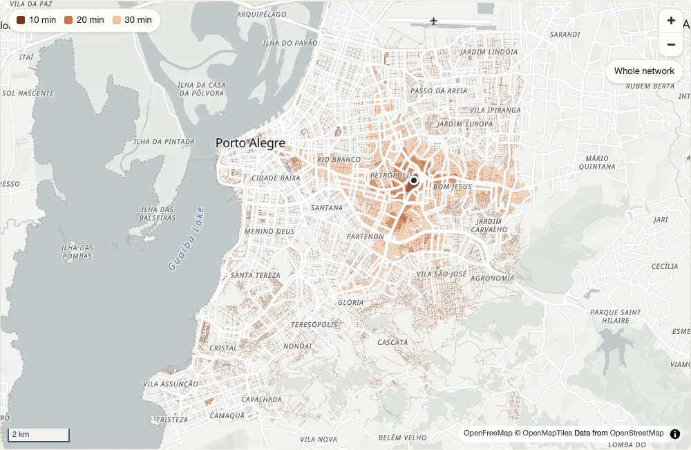
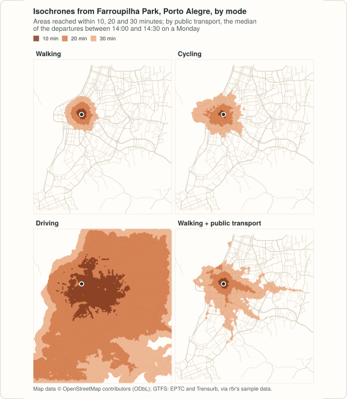

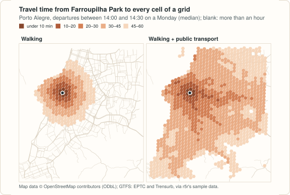
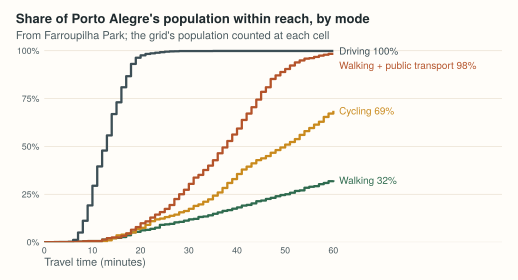
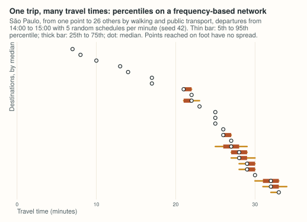
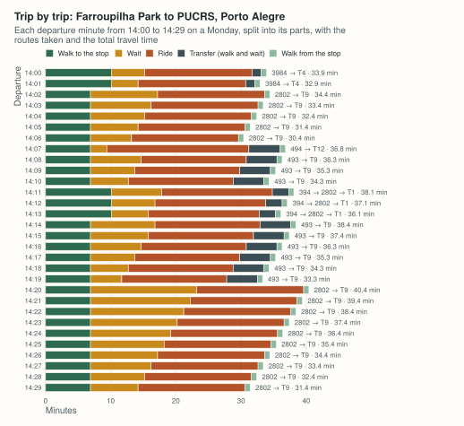
Recife and Caruaru, from open data
Two cities of Pernambuco, built from scratch: streets cut from OpenStreetMap with osmium, residents placed on a hexagonal grid with the Censo 2022, public schools from INEP and primary health care units from CNES. The worked example repeats every step, for any Brazilian municipality. Streets only: no open GTFS feed was found for either city.
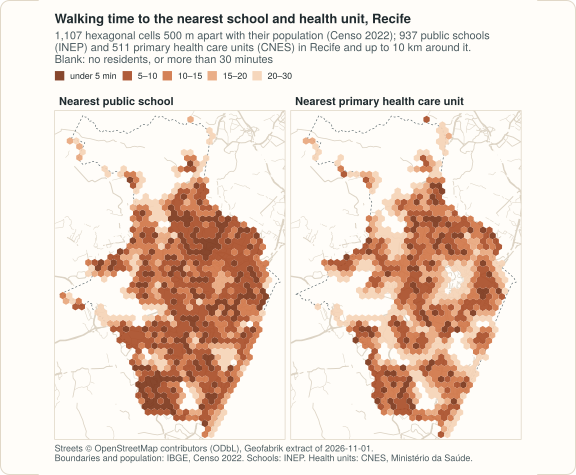


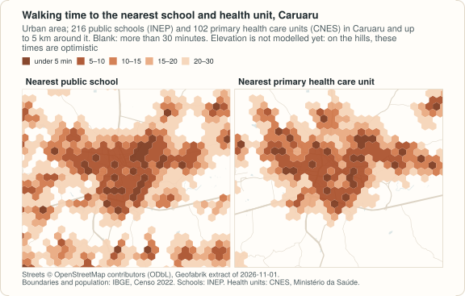
Terrain, and more of Pernambuco
What slopes change on foot and by bicycle: the Recife metropolitan region as one network of 3.7 million people, five more municipalities of Pernambuco, and two cities of hills, Salvador and Olinda. The Copernicus elevation model is checked against the ground first: at 30 m it reads the roofs, which costs a flat district of towers a minute of walking that is not there, so the results use its 90 m version and are on the low side. Streets only: no open GTFS feed was found for Recife or Salvador.


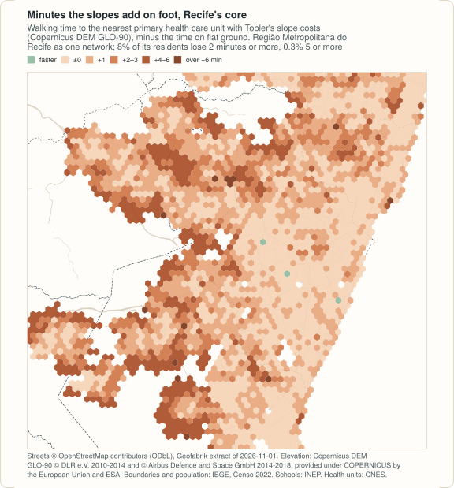
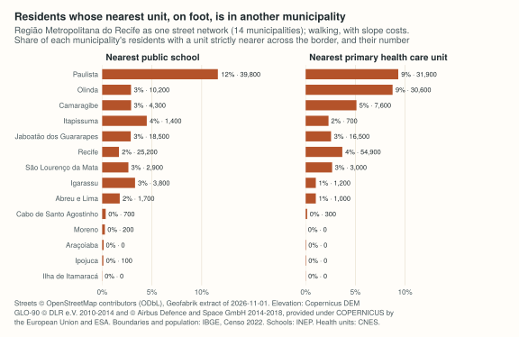
Terrain: drawn by site/figures/terrain.R. Elevation: Copernicus DEM
GLO-90 © DLR e.V. 2010-2014 and © Airbus Defence and Space GmbH 2014-2018, provided under
COPERNICUS by the European Union and ESA; Salvador's population: IBGE, Censo 2022, tracts of
Bahia; the other sources are those of Recife and Caruaru.
Scenarios, and a city abroad
What-if questions are arguments of a routing call, on the network as built: a cycle path is a lower level of traffic stress on its streets, congestion a factor on car speeds in an area, a closed avenue a speed of zero, a fare rule an edited table. And nothing is particular to Brazil: the Helsinki capital region, from OpenStreetMap, HSL's timetables and HSY's 250 m grids of residents and jobs. Map data © OpenStreetMap contributors (ODbL); Porto Alegre: the sample network credited above; Helsinki: timetables © HSL 2026 (CC BY 4.0), residents and jobs © HSY (CC BY 4.0).

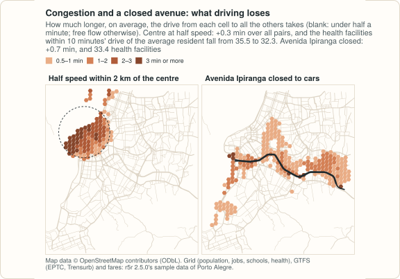

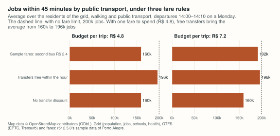
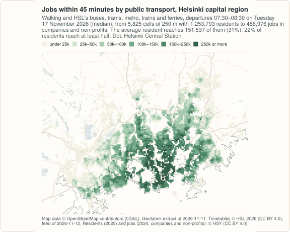

The figures are drawn by site/figures/figures.R and
site/figures/pernambuco.R from the results of the R package; the examples in the
other languages print the same numbers. Map data © OpenStreetMap contributors (ODbL); GTFS:
EPTC and Trensurb (Porto Alegre), SPTrans (São Paulo); the sample networks of Porto Alegre and
São Paulo, here and below, come from the r5r project.
Recife and Caruaru: boundaries and population © IBGE (Censo 2022); schools: INEP (Catálogo de
Escolas 2023, via geobr); health units: CNES, Ministério da Saúde.
Brazilian capitals with open GTFS
São Paulo, Rio de Janeiro and Belo Horizonte from the official GTFS feeds of November 2026, on the grid of Ipea's Access to Opportunities Project (residents and income of the Censo 2010, jobs of 2019): the jobs within an hour of every inhabited cell at the morning peak, by income. Rio de Janeiro's feed has buses and BRT only, Belo Horizonte's buses only; Fortaleza's feed ends in July 2026 and no official one was found for Curitiba. Then, on the Porto Alegre sample with a fare by mode, what a fare budget leaves of that access.

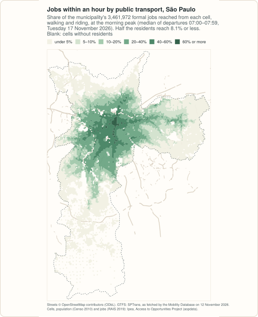


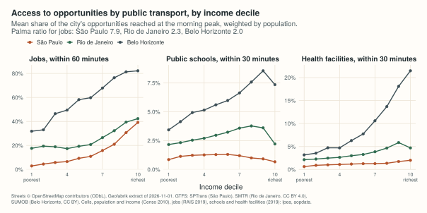

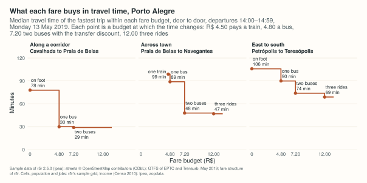
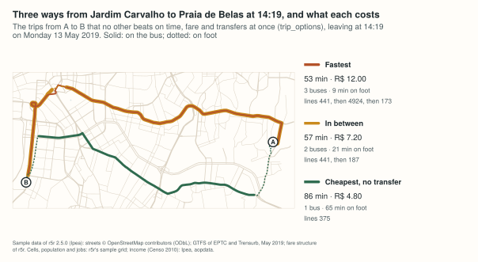
Drawn by site/figures/capitals.R. Map data © OpenStreetMap
contributors (ODbL). GTFS: SPTrans (São Paulo; public data, as redistributed by the
Mobility Database), Secretaria Municipal de Transportes do Rio de Janeiro (CC BY 4.0),
Superintendência de Mobilidade de Belo Horizonte (CC BY); EPTC and Trensurb (the Porto Alegre
sample credited above). Cells, population, income, jobs, schools and health facilities: Ipea, Access to
Opportunities Project (aopdata; Pereira et al., 2022).
One engine, four packages
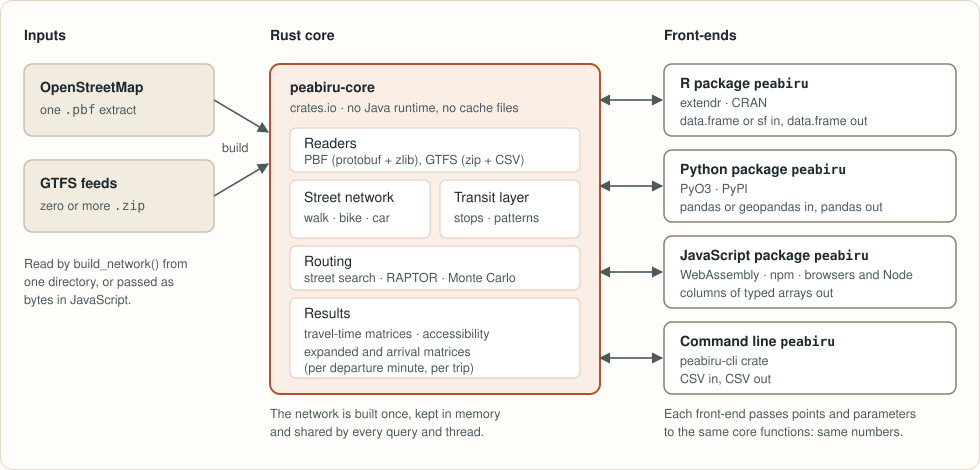
Use it
R works today
# Not on CRAN yet. From a clone of the repository (needs Rust >= 1.81):
# R CMD INSTALL r
library(peabiru)
data_path <- system.file("extdata/spo", package = "peabiru")
network <- build_network(data_path)
points <- read.csv(file.path(data_path, "spo_points.csv"))
ttm <- travel_time_matrix(
network, origins = points, destinations = points,
mode = c("WALK", "TRANSIT"),
departure_datetime = as.POSIXct("2019-05-13 14:00", tz = "America/Sao_Paulo"),
time_window = 10, percentiles = c(25, 50, 75), seed = 42
)Points as a data.frame or sf; results come back as a data.frame.
Get started · Reference
Python works today
# pip install peabiru
import datetime as dt
import peabiru
network = peabiru.build_network(peabiru.sample_data_path())
points = peabiru.sample_points() # id, lon, lat, opportunities
ttm = peabiru.travel_time_matrix(
network, points, points,
mode=["WALK", "TRANSIT"],
departure_datetime=dt.datetime(2019, 5, 13, 14, 0),
percentiles=[25, 50, 75],
seed=42,
)Points as a pandas DataFrame or a geopandas GeoDataFrame; results come back as a pandas DataFrame.
Get started · Reference
JavaScript works today
// npm install peabiru
import { readFile } from "node:fs/promises";
import * as peabiru from "peabiru";
// the sample network of the Python package (python/peabiru/data/spo)
const network = await peabiru.buildNetwork({
pbf: await readFile("spo_osm.pbf"),
gtfs: [{ name: "spo_gtfs.zip", data: await readFile("spo_gtfs.zip") }],
});
const points = {
id: ["a", "b", "c"],
lon: [-46.6290, -46.6321, -46.6355],
lat: [-23.5563, -23.5577, -23.5601],
};
const ttm = await peabiru.travelTimeMatrix(network, points, points, {
mode: ["WALK", "TRANSIT"],
departureDatetime: "2019-05-13 14:00:00",
percentiles: [25, 50, 75],
seed: 42,
});In browsers, bundlers and Node 18+; points as columns or an array of objects; results come back as columns of typed arrays. Get started · Reference
Rust and the command line works today
# cargo add peabiru-core
use peabiru_core::{build_from_dir, transit_travel_time_matrix, BuildOptions, TransitParams};
// the sample in the repository; any directory with one .pbf and GTFS .zip files
let network = build_from_dir("r/inst/extdata/spo", &BuildOptions::default())?;
let mut params = TransitParams::default();
params.date = 20190513;
params.departure_time = 14 * 3600;
params.seed = Some(42);
let ttm = transit_travel_time_matrix(&network, &points, &points, ¶ms)?;# the same from the shell, CSV in and out (crate peabiru-cli, binary peabiru)
peabiru matrix r/inst/extdata/spo --origins r/inst/extdata/spo/spo_points.csv \
--mode WALK,TRANSIT --departure 2019-05-13T14:00 --percentiles 25,50,75 \
--seed 42 -o ttm.csvThe Rust guide · API reference ·
The command line: matrices, accessibility, isochrones, itineraries,
fares and network exports without R or Python, from the crate peabiru-cli
(to be published with version 0.1.0; for now built from the repository)
Speed and memory
r5r, r5py
cppRouting, igraph, dodgr, r5r, pandana, r5py, networkx
Porto Alegre, 1,227 × 1,227 points, 4 threads; median of 3 timed runs after a warm-up; memory is the peak of the whole process. Only r5r and r5py compute the same matrices as peabiru; the street packages use network models of their own, so their times answer a similar but not identical question (the differences are measured on the benchmarks page). Measured 2026-11-12; methodology, all tasks and how the results differ.
Status
Early development: on crates.io, PyPI and npm (CRAN to follow); the interfaces may still change. Options that are not implemented are errors, never silently ignored.
Implemented
- Network from one
.pbf, any number of GTFS feeds (schedules and frequencies) and an optional elevation raster; feeds with errors of priorityHIGHare refused travel_time_matrix(): walk, bicycle, car; transit (any subset of its modes) reached and left on foot, by bicycle or by caraccessibility()with all five decay functionsexpanded_travel_time_matrix()andarrival_travel_time_matrix()isochrone(): polygons from a travel-time surface, or the street segments reacheddetailed_itineraries(): the fastest trip or the alternatives, leg by legtrip_options(): the trips not dominated on time, fare, transfers and walking, over the departure window- Fares:
setup_fare_structure(),read_fare_structure(),write_fare_structure(),max_fareandpareto_frontier() - Slope costs from elevation (Tobler, Minetti); car speed and traffic stress scenarios
find_snap(),street_network_bbox(),street_network_to_sf(),transit_network_to_sf(),check_transit_availability(),get_gtfs_errors()- Monte Carlo draws for frequency-based feeds, reproducible with a
seed; CSV output withoutput_dir(R and Python)
Not supported
- Fare structures that name a fare calculator instead of fare rules (fares follow the rules of the structure: a fare per route type, discounted transfers, a cap)
Checked results
The R, Python and JavaScript packages have the same routing and network functions (in
camelCase in JavaScript, which has no output_dir), over one engine. The
repository keeps reference results for every function on the sample networks, and each push
is checked against them value by value on Linux, macOS and Windows. Each package has one page
comparing it with r5r: R,
Python, JavaScript,
Rust.
Credits
The routing logic is a port of Conveyal's R5 (MIT licence). Polygon isochrones port the algorithm of isoband (MIT), and parts of Apache Commons Math 3 (Apache-2.0) and fdlibm are translated, so that the numbers are the same on every platform. The name comes from the Peabiru, the pre-Columbian network of trails that crossed South America from the Atlantic coast to the Andes.